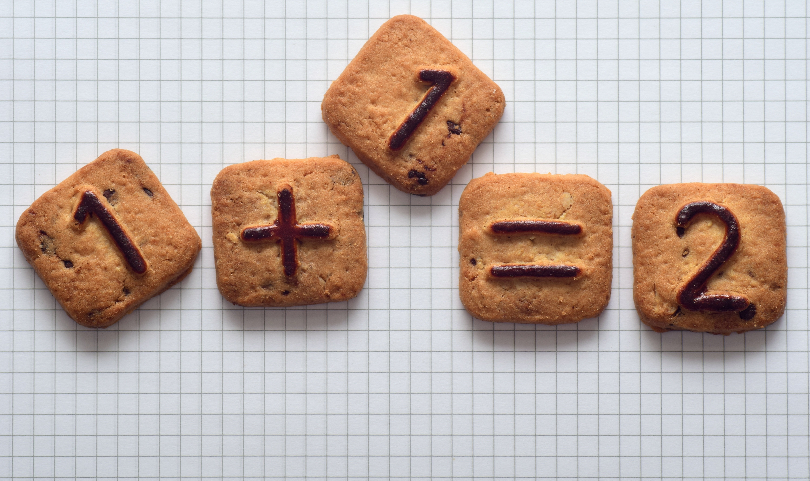

<strong>Cocinando Proporciones: El Restaurante Matemático</strong>

Ulleo (2018). Pagar, Galletas y Pasteles. Pixabay.
¡Hola, equipo de chefs! 👋
¿Alguna vez te has preguntado por qué una receta que sale perfecta para 4 personas se convierte en un desastre cuando intentas cocinarla para 20? ¿O por qué el precio que ves en el estante no es el mismo que pagas en la caja?
¡La respuesta está en las Matemáticas!
En este proyecto, no vamos a usar solo la calculadora, sino que nos vamos a convertir en expertos gestores de cocina. Vuestro gran reto será diseñar un Recetario Interactivo profesional utilizando la herramienta Canva. Pero cuidado: no basta con que sea bonito. Para que vuestro restaurante sea un éxito, tendréis que dominar:
⚖️ La magia de la proporción: Escalar ingredientes sin perder el sabor.
💰 El control del presupuesto: Calcular costes reales y aplicar el IVA como profesionales.
🎨 El diseño digital: Crear un producto que entre por los ojos.
En este recurso encontraréis vuestra Hoja de Ruta, las herramientas de investigación y todo lo que necesitáis para que vuestro proyecto sea "estrella Michelin".
¿Estáis preparados para encender los fogones digitales? ¡Empezamos! 🚀